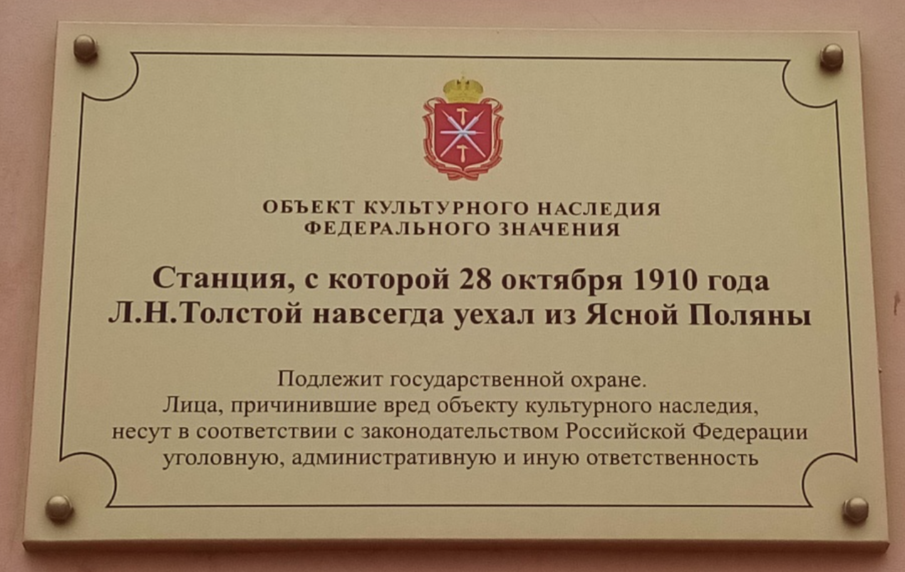
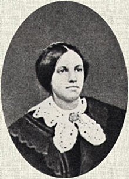
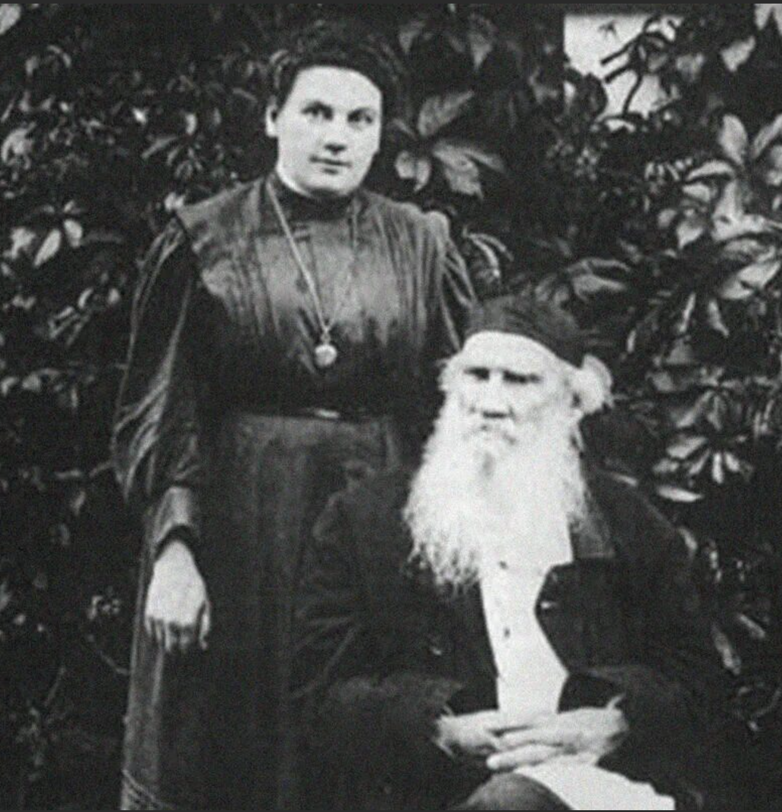
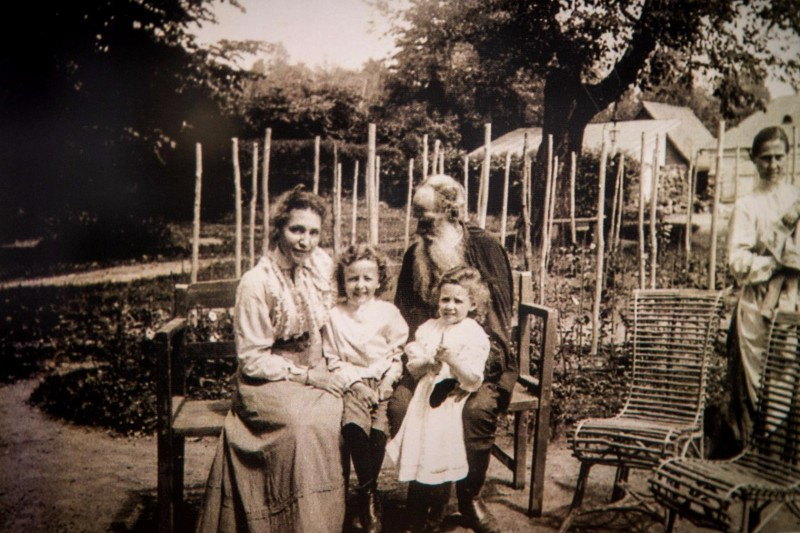
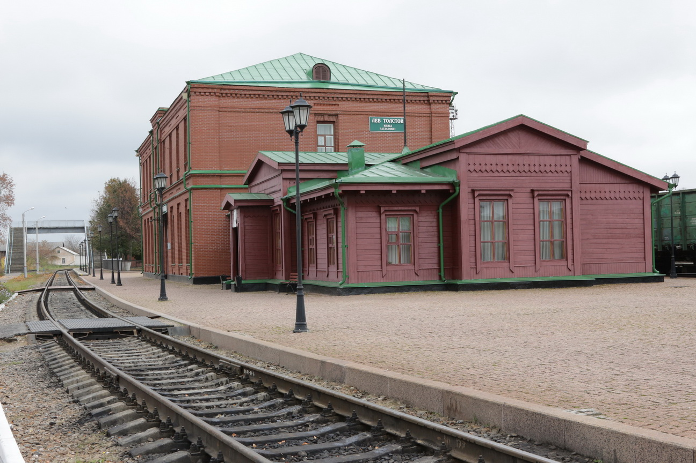
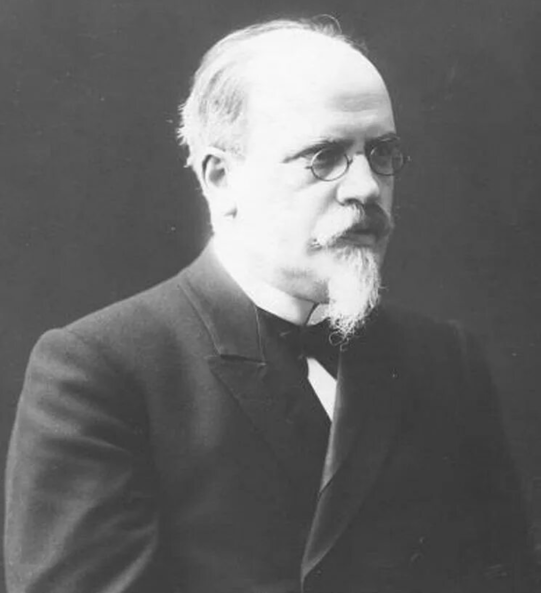
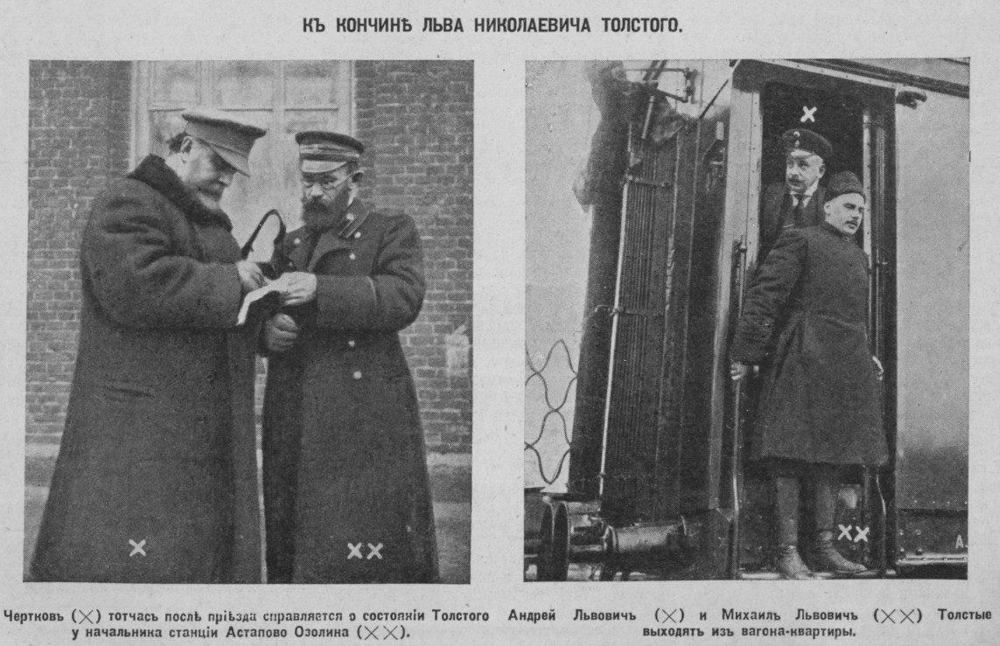
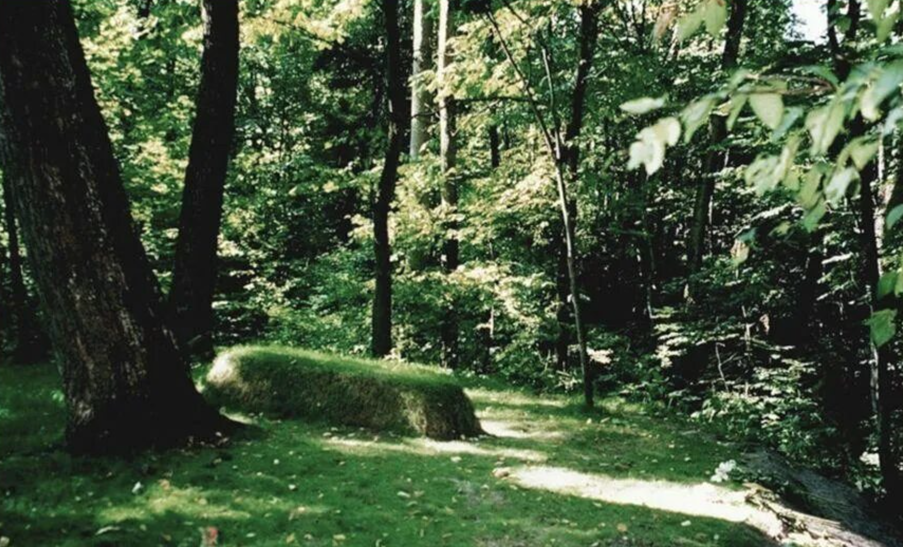

Последнее путешествие


В тот
же день, пересев на станции Горбачёво в другой поезд, доехал
до станции Козельск, нанял ямщика и направился в Оптину
Пустынь, а оттуда на следующий день — в Шамординский
монастырь, где Толстой встретился со своей сестрой,
Марией
Николаевной Толстой.

Позднее в Шамордино тайно приехала
дочь Толстого,
Александра Львовна

со своей подругой.
Утром 31 октября (13 ноября) Л. Н. Толстой и сопровождающие отправились из Шамордино в Козельск, где сели в уже подошедший к вокзалу поезд № 12, следующий в южном направлении. Билетов при посадке купить не успели; доехав до Белёва, приобрели билеты до станции Волово. Сопровождавшие Толстого позже также свидетельствовали, что определённой цели у путешествия не было. После совещания решили ехать к его племяннице Е. С. Денисенко

, в Новочеркасск,
где хотели попытаться получить заграничные паспорта и затем ехать в
Болгарию; если же это не удастся — ехать на Кавказ. Однако по дороге
Л. Н. Толстой простудился и заболел крупозным воспалением лёгких и
вынужден был в тот же день выйти из поезда на первой большой станции
рядом с населённым пунктом. Этой станцией была
Астапово

(ныне Лев
Толстой, Липецкая область).
Известие о болезни Льва Толстого вызвало сильный переполох как в высших кругах, так и среди членов святейшего Синода. О состоянии его здоровья и положении дел систематически направлялись шифрованные телеграммы министерству внутренних дел и Московскому жандармскому управлению железных дорог. Было созвано экстренное тайное заседание Синода, на котором, по инициативе обер-прокурора Лукьянова

был поставлен
вопрос об отношении церкви на случай печального исхода болезни Льва
Николаевича. Но вопрос положительно так и не был решён.
Льва Николаевича пыталось спасти шестеро врачей, но на их предложения помочь, он лишь ответил: «Бог всё устроит». Когда же его спросили, чего ему самому хочется, он лишь ответил: «Мне хочется, чтобы мне никто не надоедал». Последними осмысленными его словам, которые он произнёс за несколько часов до смерти старшему сыну, которые тому от волнения не удалось разобрать, но которые слышал врач Маковицкий

(20) ноября в 6 часов 5 минут после недели тяжёлой и мучительной болезни (задыхался) Лев Николаевич Толстой умер, в доме начальника станции И. И. Озолина.

Когда Л. Н. Толстой приезжал в Оптину пустынь перед смертью, игуменом монастыря и скитоначальником был старец Варсонофий. Толстой не решился зайти в скит, и старец поехал за ним на станцию Астапово, чтоб дать ему возможность примириться с Церковью. Но его не пустили к писателю, как не пустили к нему и некоторых из его ближайших родственников из числа православных верующих.
9 ноября 1910 года в Ясной Поляне собралось несколько тысяч человек на похороны Льва Толстого.


(23) ноября 1910 года Л. Н. Толстой был похоронен в Ясной Поляне

,
на краю оврага в лесу, где в детстве он вместе с братом искал «зелёную
палочку», хранившую «секрет», как сделать всех людей счастливыми.
Когда гроб с покойным опускали в могилу, все присутствующие благоговейно
преклонили колени.
В январе 1913 года было опубликовано письмо графини Софьи Толстой от 22 декабря 1912 года, в котором она подтверждает известия в печати о том, что на могиле её супруга было совершено его отпевание неким священником (она опровергает слухи о том, что он был ненастоящим) в её присутствии. В частности графиня писала: «Заявляю ещё, что Лев Николаевич ни разу перед смертью не выразил желания не быть отпетым, а раньше писал в своём дневнике 1895 г., как бы завещание: „Если можно, то (хоронить) без священников и отпевания. Но если это будет неприятно тем, кто будет хоронить, то пускай хоронят, как обыкновенно, но как можно подешевле и попроще“».
9 ноября 1910 г. в газетах была опубликована резолюция Николая II на докладе министра внутренних дел о кончине Льва Николаевича Толстого: «Душевно сожалею о кончине великого писателя, воплотившего во время расцвета своего дарования в творениях своих образы одной из славных годин русской жизни. Господь бог да будет ему милосердный судья»